오늘의 과제

박사실패 그림 여덟 장이다. 고치기 전에 무엇부터 볼까?

주판봇전부 다시 그리면 됩니다… 한 장씩 처음부터…

초파리 연구원원인을 모르면 또 실패할걸. 진단 순서부터 정하자.

X2저희 평가단이 원인을 맞혀 볼게요.
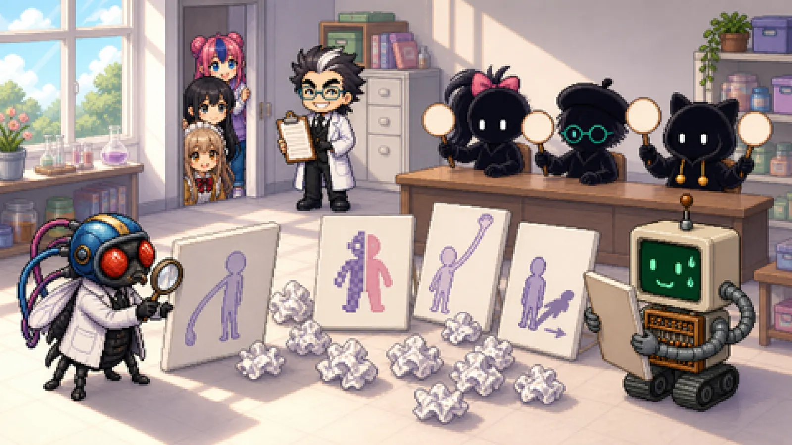
주판봇이 일부러 실패한 그림 여덟 장을 들고 왔습니다. 평가단은 점수 대신 '원인'을 맞힙니다. 실패는 원리가 빠진 자리를 정확히 보여 줍니다.
그림 실력·코드·수식을 몰라도 됩니다. 실험을 눌러 보며 따라오세요.
구조 → 빛 → 천 → 고정값 → 강도·화풍 순서로 하나씩 확인합니다
자동차가 안 움직이면 바퀴 나사보다 연료·배터리부터 확인합니다.
그림 검수 체크리스트를 이 순서로 만들면, 수정 요청을 '어느 항목이 틀렸다'로 정확히 전할 수 있습니다.


여덟 장 모두 점검표 다섯 항목 중 한 곳에서 처음 걸립니다. 처음 걸린 항목이 가장 먼저 고칠 원인입니다.
f3·f4처럼 원리(빛·천)에서 걸리면 프롬프트의 자세·빛·소재 문장을 고칩니다. f1·f6처럼 고정값에서 걸리면 고정 문장과 참고 그림을 보강합니다.
작업에서는 수정 요청을 '점검 2번(빛) — 그림자를 오른쪽 아래로'처럼 항목 번호와 함께 전합니다.
AI 검수 도구가 '이 그림은 품질 점수 9.2점'이라고 했습니다. 그대로 믿어도 될까요?
품질 점수는 선명도·보기 좋음 위주일 때가 많습니다. 하루의 번이 있는지, 빛과 그림자가 맞는지는 점검표로 직접 확인해야 합니다.
그림마다 증상을 보고 원인을 고른 뒤, 연결된 원리와 고치는 프롬프트 조각을 확인합니다.
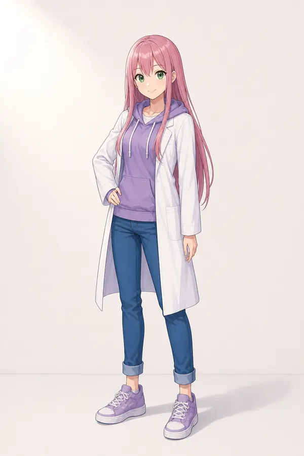
증상분홍 머리는 맞지만 번 두 개, 남색 줄, 바보털이 없고 눈이 초록입니다.
다시 볼 원리5부 1단계 캐릭터 고정 문장
two round messy hair buns on top, thick navy streak down the center of the bangs, small ahoge, big bright blue eyes + 참고 그림 첨부
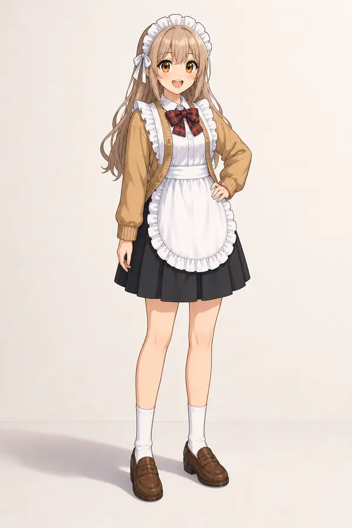
증상리본이 오른쪽 귀 위에 있고, 손도 반대쪽 허리에 있으며 빛도 오른쪽에서 옵니다.
다시 볼 원리5부 1단계 고정 문장(좌우 표식)
white ribbon over the LEFT ear, right hand on hip, light from the upper left + 좌우 반전 금지(no mirrored image)
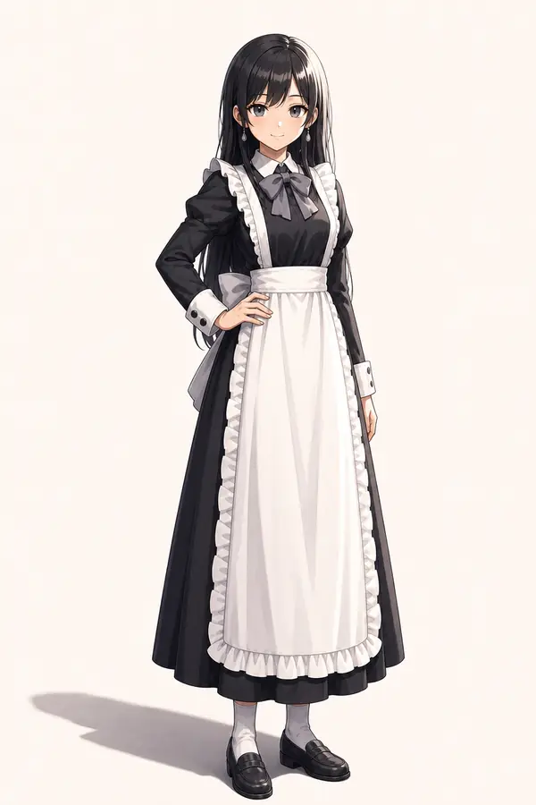
증상얼굴·몸은 왼쪽에서 빛을 받는데, 바닥 그림자도 왼쪽으로 뻗고 머리 하이라이트는 오른쪽에 있습니다.
다시 볼 원리2부 2단계 두 가지 그림자
single light source from the upper left, form shadows on the right side, cast shadow on the floor toward the lower right
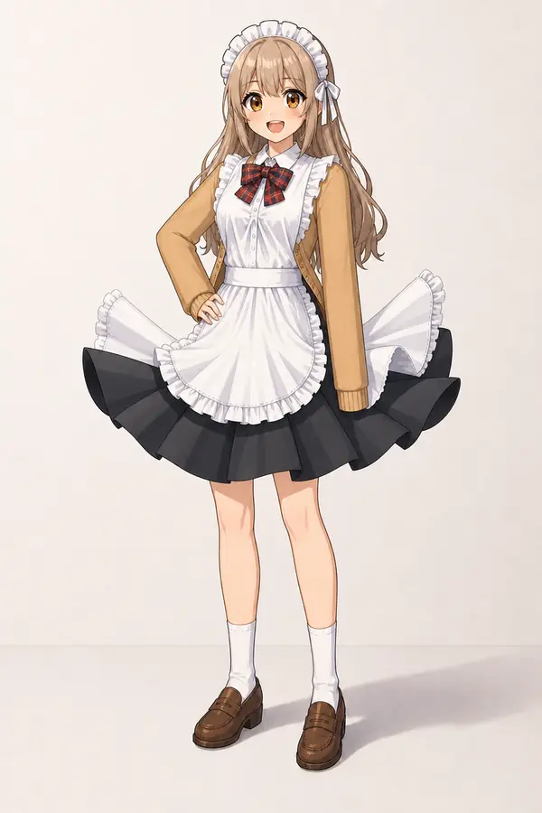
증상치마와 앞치마가 굳은 듯 위로 떠 있고, 굽힌 팔꿈치는 매끈하며 가슴 한가운데에서 주름이 퍼집니다.
다시 볼 원리3부 1단계 주름 세 종류
still air, skirt and apron hanging naturally by gravity from the waist, soft folds gathered inside the bent elbows
증상얼굴과 옷은 멀쩡한데 흔드는 손의 손가락이 여섯 개이고 엄지 위치가 어색합니다.
다시 볼 원리4부 3단계 잡음에서 그림으로
손 부분만 다시 그리기 + 'five fingers, natural hand' + 손 포즈 가이드(뼈대)
이 사례의 그림은 실패를 재현하지 못한 결과입니다. 여섯 손가락을 요청했지만 그림 도구가 다섯 개로 고쳐 그렸습니다. 같은 요청도 생성할 때마다 결과가 달라진다는 사례이니, 손가락은 늘 직접 세어 확인하세요.
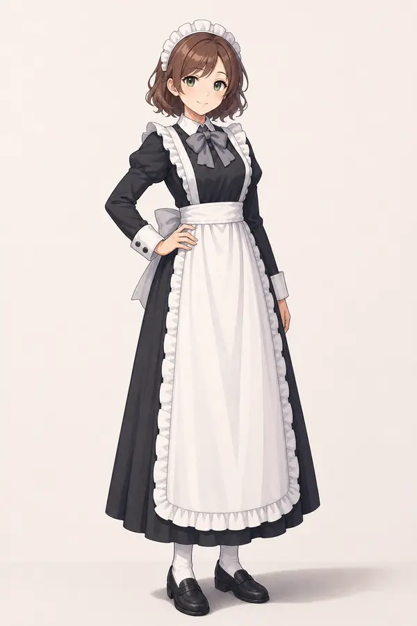
증상검은 메이드복과 앞치마는 비슷한데, 짧은 갈색 단발에 초록 눈, 흰 머리띠까지 생겼습니다.
다시 볼 원리5부 3단계 원본 반영 정도
강도를 중간으로 + long straight jet-black hair, gray eyes, no headdress + 참고 그림
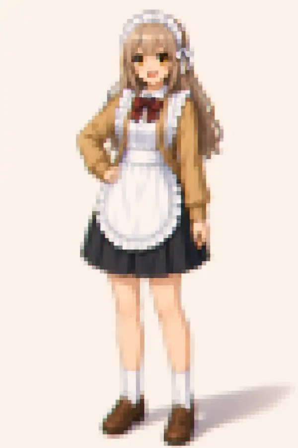
증상그림은 커졌지만 큰 네모가 흐릿하게 번지고, 얼굴은 네모 몇 개뿐입니다.
다시 볼 원리5부 2단계 화풍 바꾸기
화풍 문장(high-quality anime illustration, clean lineart) + 강도 올리기 + 고정 문장
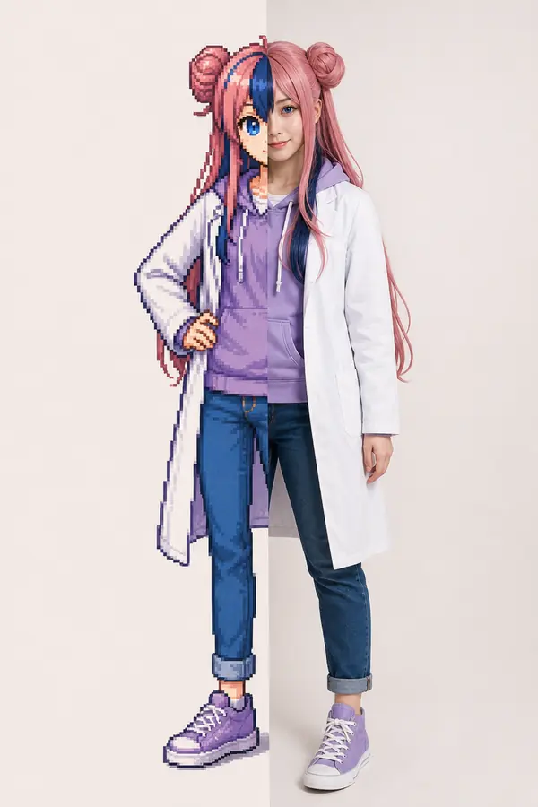
증상몸 가운데를 따라 왼쪽은 네모 픽셀, 오른쪽은 사진처럼 그려져 이음매가 보입니다.
다시 볼 원리5부 5단계 프롬프트 조립(화풍은 하나)
화풍은 하나만 + 반대 화풍은 금지 목록으로(no pixel art)
분홍 머리에 특정 머리 모양을 더하면, 결과가 널리 알려진 어떤 애니 캐릭터를 닮아 버리는 일이 있습니다.
4부 2단계의 지도로 보면, 그 조합 근처에 '자주 본 그림이 몰린 동네'가 있어서 출발점이 그쪽으로 끌려간 것입니다.
이 사례는 다른 작품의 캐릭터를 닮은 그림을 만들게 되므로 일부러 만들지 않았습니다. 닮은 결과가 나오면 쓰지 않고, 고정 문장을 더 구체적으로 쓰고 참고 그림을 함께 넣어 다시 만듭니다.
다시 볼 원리4부 2단계 잠재공간
실패 카드의 '고치는 프롬프트 조각'을 넣어 f3(빛 모순)과 f4(떠 있는 천)를 다시 만듭니다. 실패 그림과 나란히 놓고 점검표로 확인합니다.
빛 문장에 그림자 방향까지 적었습니다. 위의 f3 카드와 비교해 보세요. 첨부: 시아 설정 시트
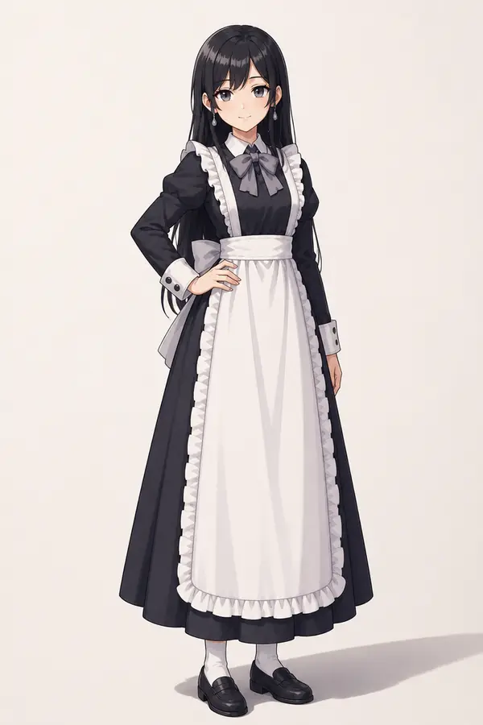
Full body character illustration, vertical 2:3. Character (match the attached reference sheet exactly): Sia, a calm maid intern, a young adult woman in her early twenties, long straight jet-black hair reaching the waist with side-swept bangs, calm gray eyes, small silver drop earrings, long-sleeved charcoal-black maid dress with puffed shoulders and white lace cuffs, white high collar with a large soft gray bow, long white frilled apron reaching the ankles, white socks, black flat shoes, no headdress. Pose: standing upright in a three-quarter view, right hand resting on the hip. Lighting: a single light source from the upper left. Form shadows on the right side of the face and body; the hair highlight on the left side of the head; the cast shadow on the floor falls toward the lower right, away from the light. High-quality anime illustration, clean lineart, two-tone cel shading with soft highlights. Plain off-white background. No text, no letters, no logos, no watermark, no revealing clothing, not resembling any famous anime character, five fingers on each hand. No headdress.
'바람 없음'과 '허리에서 처짐', '팔꿈치 안쪽 모임 주름'을 적었습니다. 첨부: 모아 설정 시트
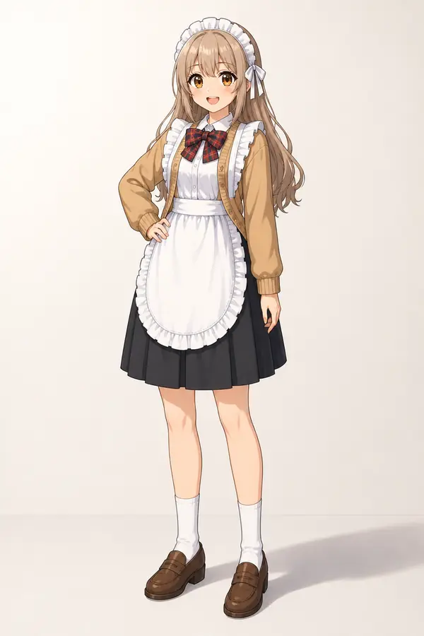
Full body character illustration, vertical 2:3. Character (match the attached reference sheet exactly): Moa, a gentle cheerful maid intern, a young adult woman in her early twenties, long ash-beige hair with soft wavy ends and neat bangs, white frilled maid headband with a thin white ribbon over the LEFT ear, big round amber-brown eyes, white shirt with a red and navy plaid bow tie, camel knit cardigan with ribbed cuffs, white frilled apron, black knee-length skirt, white socks, brown loafers. Pose: standing still, three-quarter view, right hand resting on the hip so the right elbow is bent. Fabric: still air. The skirt and apron hang naturally by gravity from the waist with soft vertical folds; soft compression folds gather inside the bent right elbow; the straight left sleeve is smooth; no decorative fold lines on the chest. Lighting: soft daylight from the upper left, cast shadow toward the lower right. High-quality anime illustration, clean lineart, two-tone cel shading with soft highlights. Plain off-white background. No text, no letters, no logos, no watermark, no revealing clothing, not resembling any famous anime character, five fingers on each hand.
'직접 만들어 보기'에서 나온 그림을 출발 그림으로 삼아, 문장 하나로 원리 하나만 바꿉니다. 한 번에 하나만 바꿔야 무엇 때문에 달라졌는지 알 수 있습니다. 예상 결과 그림은 같은 문장으로 실제로 만든 예시이며, 여러분의 결과는 조금씩 다를 수 있습니다.
고친 그림을 일부러 좌우로 뒤집은 뒤, 진단 순서대로 어디서 걸리는지 찾아봅니다. 6부 f2(좌우 반전)를 내 손으로 만들어 보는 연습입니다. 좌우 표식이 있는 모아는 뒤집히면 바로 티가 납니다.
Same image. Change only: flip the whole image horizontally like a mirror (the ribbon is now over Moa's RIGHT ear, the other hand is on the hip, the light now comes from the upper right). Keep everything else the same.
이 문장의 뜻 — 그림 전체를 거울처럼 좌우로 뒤집기(리본이 오른쪽 귀 위로, 빛은 오른쪽 위에서).
다시 볼 원리6부 f2 좌우 반전
광원이 둘이면 그림자도 둘이 됩니다. 그림자가 몇 개인지, 각 그림자의 주인이 어느 광원인지 세는 연습입니다. 6부 진단 순서의 ② 빛 항목을 직접 따져 봅니다.
Same image. Change only the lighting: add a second, weaker light from the upper right in addition to the main light from the upper left. Now there are two cast shadows on the floor: a darker one toward the lower right and a lighter one toward the lower left. Keep Sia, the pose and the background the same.
이 문장의 뜻 — 주 광원(왼쪽 위)에 더해 약한 두 번째 빛을 오른쪽 위에. 바닥 그림자 두 개 — 오른쪽 아래가 진하고 왼쪽 아래가 옅게.
다시 볼 원리6부 1단계 진단 순서
| 항목 | 주판봇 | 초파리 |
|---|---|---|
| 맞힌 원인 수(8개 중) | 6 | 7 |
| 연결한 원리 | 6 | 7 |
| 고친 프롬프트 | 7 | 6 |
| 합계 | 19 | 20 |
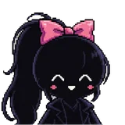


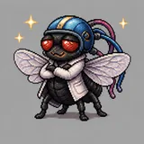
점수는 이야기 속 예시입니다. 실제 그림을 평가한 값이 아닙니다.
| 주제 | 한 줄 | 작업에서는 |
|---|---|---|
| f1·f2 | 고정값·좌우 표식 | 5부 1단계 |
| f3 | 광원 하나·그림자 반대쪽 | 2부 2단계 |
| f4 | 접점·중력 | 3부 1단계 |
| f5 | 작은 특징 단계 오류 | 4부 3단계 |
| f6·f7 | 강도 너무 높음·낮음 | 5부 2·3단계 |
| f8 | 화풍은 하나 | 5부 5단계 |


이 페이지에 나온 개념·방법·비유·쓰임을 모았습니다. 검색하고, "설명 보러 가기"로 본문에 돌아갑니다.
지식 색인을 출처와 함께 파일로 내려받습니다. 서지 관리는 BibTeX·RIS, 온톨로지 편집은 Turtle, 그래프 도구는 CSV, 여러 페이지 합치기는 kg.json입니다.